Zeg je rol, zie elk woord
Zeg je zin hardop en zie meteen welke woorden goed gingen. Repliko leest de andere rollen voor en luistert op je telefoon – je stem wordt nooit bewaard.
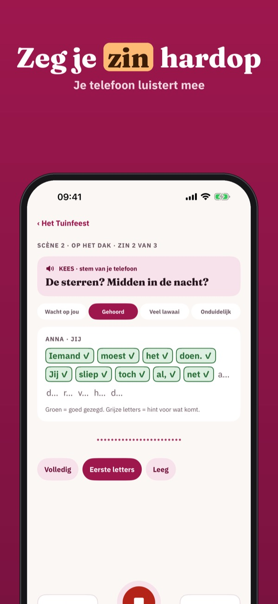
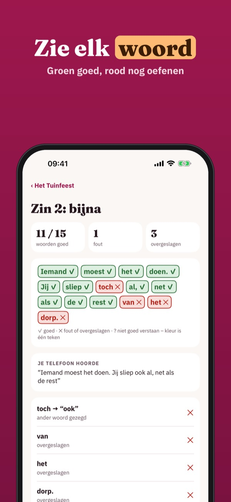
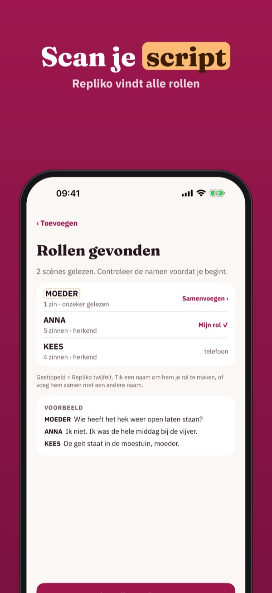
Repliko helpt je je rol, gedicht of speech uit je hoofd te leren. Zeg je zin hardop: je telefoon controleert woord voor woord en leest de rollen van de anderen voor.
Zonder aankoop oefen je één stuk of gedicht met controle per woord, hints en lastige zinnen, en doe je mee in een cast. Repliko Plus is een eenmalige aankoop voor onbeperkt stukken, scannen, en je cast uitnodigen. Geen abonnement.
Repliko is een oefenhulp en levert geen toneelstukken of teksten; je gebruikt je eigen tekst. De spraakherkenning kan soms verkeerd horen – je kunt het resultaat altijd verbeteren. Niet verbonden aan een school of theater.
Terms of Use (EULA): https://www.apple.com/legal/internet-services/itunes/dev/stdeula/
Privacy: https://baytechbv.github.io/privacy/repliko-eu/
Powiedz rolę – sprawdź słowa
Powiedz kwestię na głos i od razu zobacz, które słowa były dobrze. Repliko czyta pozostałe role i słucha w telefonie – głos nigdy nie jest zapisywany.
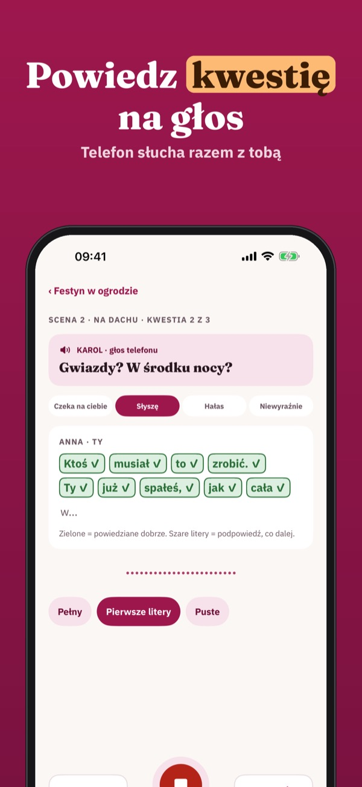
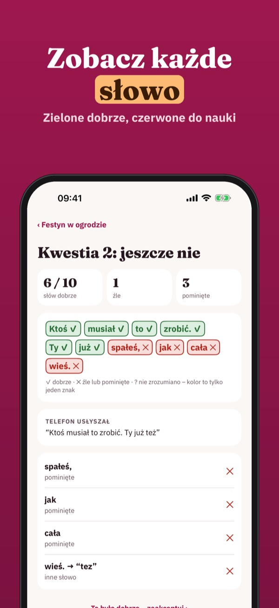
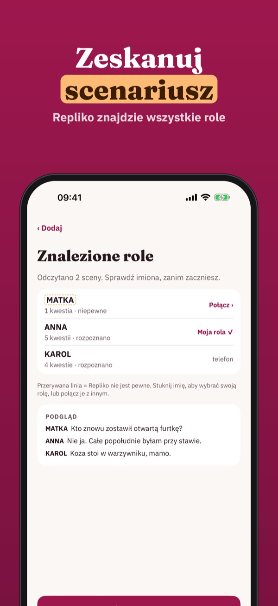
Repliko pomaga nauczyć się na pamięć roli, wiersza lub przemówienia. Mów na głos: telefon sprawdza słowo po słowie i czyta kwestie pozostałych postaci.
Bez zakupu: jedna sztuka lub wiersz ze sprawdzaniem słowo po słowie, podpowiedziami i trudnymi kwestiami oraz udział w obsadzie. Repliko Plus to jednorazowy zakup: bez limitu sztuk, skanowanie, zapraszanie obsady. Bez subskrypcji.
Repliko to pomoc do ćwiczeń i nie zawiera sztuk ani tekstów; używasz własnego tekstu. Rozpoznawanie mowy może czasem źle usłyszeć – zawsze możesz poprawić wynik. Nie jest powiązane ze szkołą ani teatrem.
Terms of Use (EULA): https://www.apple.com/legal/internet-services/itunes/dev/stdeula/
Privacy: https://baytechbv.github.io/privacy/repliko-eu/
Dites votre rôle, mot à mot
Dites votre réplique à voix haute et voyez aussitôt quels mots étaient justes. Repliko lit les autres rôles et écoute sur le téléphone – votre voix n’est jamais gardée.
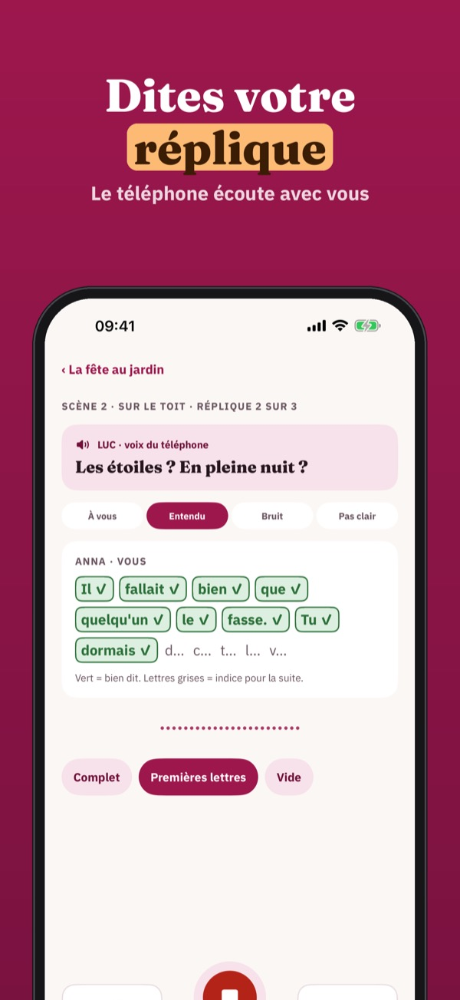
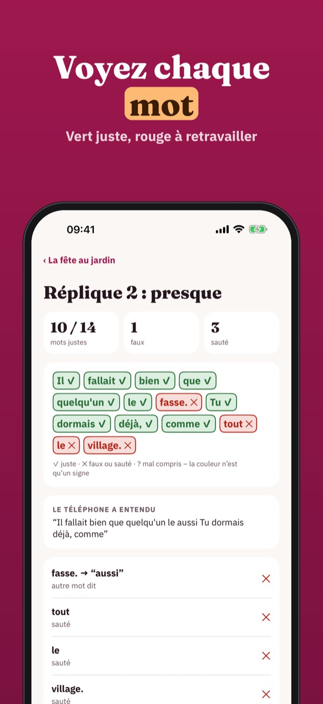
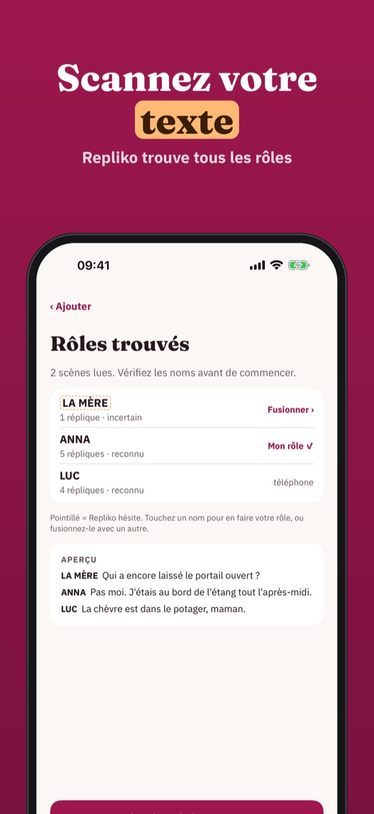
Repliko vous aide à apprendre par cœur un rôle, une poésie ou un discours. Dites votre texte à voix haute : le téléphone vérifie mot à mot et lit les répliques des autres.
Sans achat : une pièce ou une poésie avec vérification mot à mot, indices et répliques difficiles, et participation à une troupe. Repliko Plus est un achat unique : pièces illimitées, scan, inviter votre troupe. Sans abonnement.
Repliko est une aide à l’entraînement et ne fournit ni pièces ni textes ; vous utilisez votre propre texte. La reconnaissance vocale peut parfois mal entendre – vous pouvez toujours corriger. Sans lien avec une école ou un théâtre.
Terms of Use (EULA): https://www.apple.com/legal/internet-services/itunes/dev/stdeula/
Privacy: https://baytechbv.github.io/privacy/repliko-eu/
Recita e controlla ogni parola
Di’ la tua battuta ad alta voce e vedi subito quali parole erano giuste. Repliko legge gli altri ruoli e ascolta sul telefono – la tua voce non viene mai salvata.
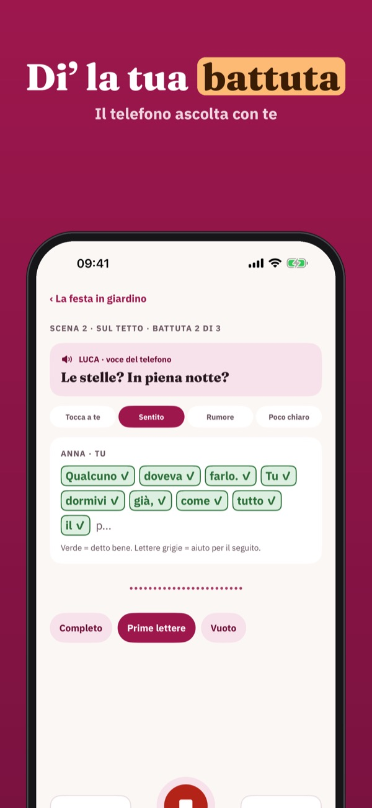
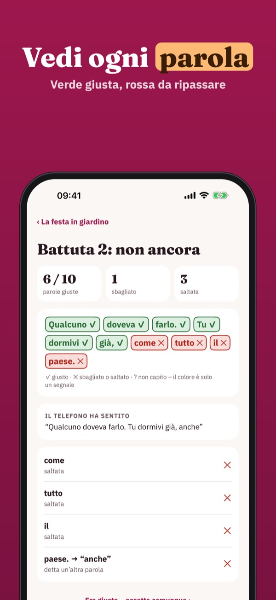
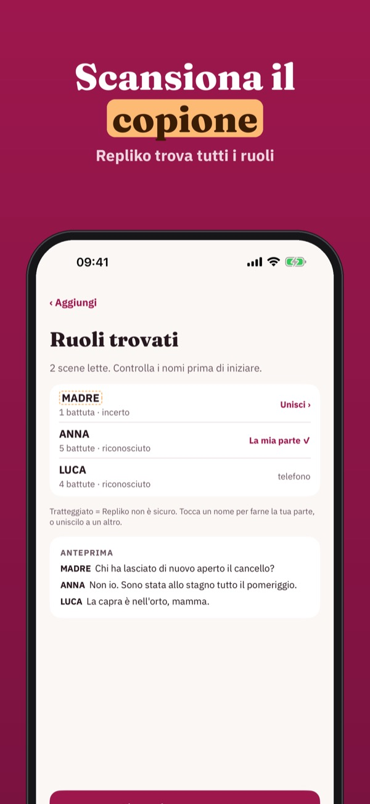
Repliko ti aiuta a imparare a memoria una parte, una poesia o un discorso. Parla ad alta voce: il telefono controlla parola per parola e legge le battute degli altri.
Senza acquisto: un copione o una poesia con controllo parola per parola, suggerimenti e battute difficili, e partecipazione a una compagnia. Repliko Plus è un acquisto unico: copioni illimitati, scansione, invitare la tua compagnia. Nessun abbonamento.
Repliko è un aiuto per esercitarsi e non fornisce copioni né testi; usi il tuo testo. Il riconoscimento vocale a volte può sentire male – puoi sempre correggere il risultato. Non è collegata a scuole o teatri.
Terms of Use (EULA): https://www.apple.com/legal/internet-services/itunes/dev/stdeula/
Privacy: https://baytechbv.github.io/privacy/repliko-eu/
Di tu papel, palabra a palabra
Di tu frase en voz alta y mira al instante qué palabras salieron bien. Repliko lee los demás papeles y escucha en el teléfono – tu voz nunca se guarda.
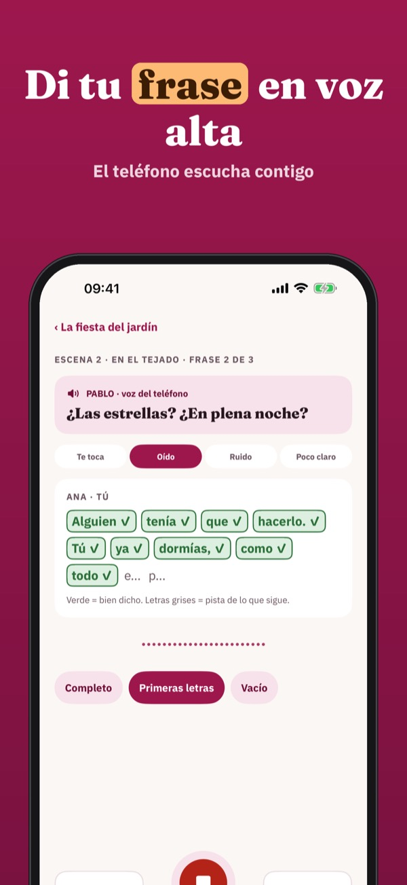
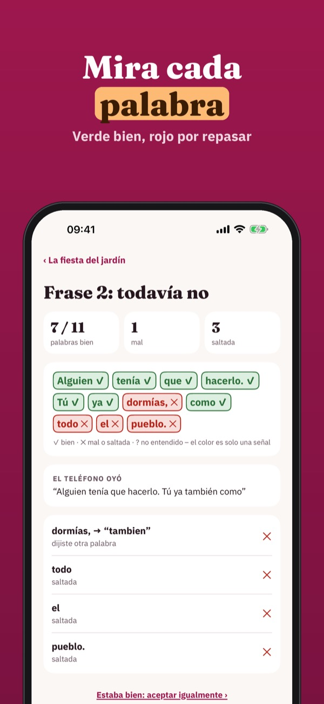
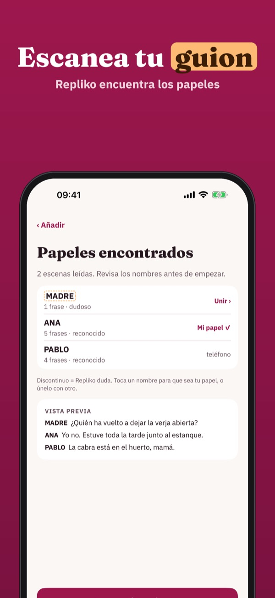
Repliko te ayuda a aprender de memoria un papel, un poema o un discurso. Habla en voz alta: el teléfono comprueba palabra a palabra y lee las frases de los demás.
Sin compra: una obra o un poema con comprobación palabra a palabra, pistas y frases difíciles, y unirte a una compañía. Repliko Plus es un pago único: obras ilimitadas, escaneo, invitar a tu compañía. Sin suscripción.
Repliko es una ayuda para practicar y no incluye obras ni textos; usas tu propio texto. El reconocimiento de voz a veces puede oír mal – siempre puedes corregir el resultado. No está vinculada a ningún colegio ni teatro.
Terms of Use (EULA): https://www.apple.com/legal/internet-services/itunes/dev/stdeula/
Privacy: https://baytechbv.github.io/privacy/repliko-eu/
Sprich – Wort für Wort geprüft
Sprich deinen Satz laut und sieh sofort, welche Wörter saßen. Repliko liest die anderen Rollen vor und hört auf dem Handy zu – deine Stimme wird nie gespeichert.
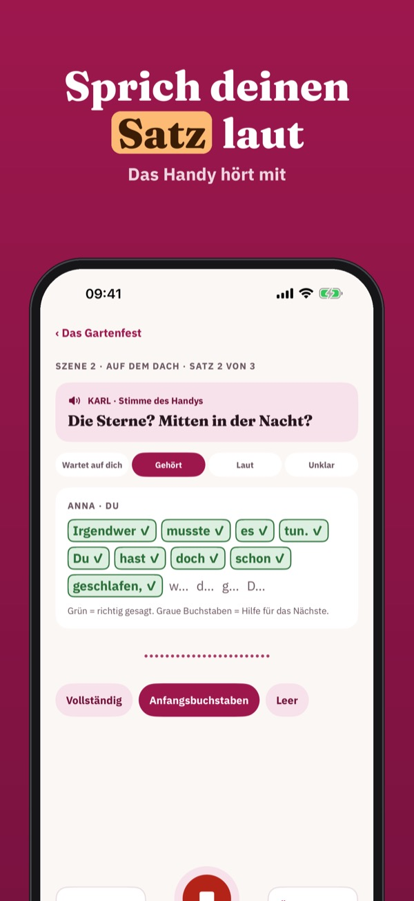
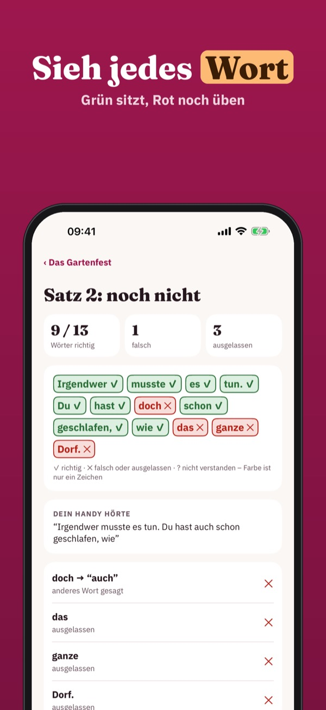
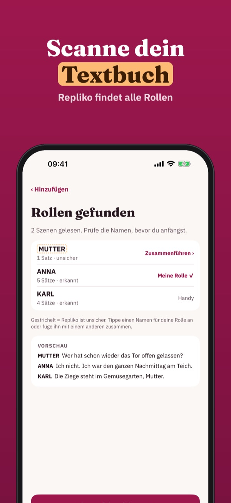
Repliko hilft dir, eine Rolle, ein Gedicht oder eine Rede auswendig zu lernen. Sprich laut: Das Handy prüft Wort für Wort und liest die Sätze der anderen vor.
Ohne Kauf: ein Stück oder Gedicht mit Prüfung Wort für Wort, Hilfen und schwierigen Sätzen, und Mitmachen im Ensemble. Repliko Plus ist ein Einmalkauf: unbegrenzt Stücke, Scannen, Ensemble einladen. Kein Abo.
Repliko ist eine Übungshilfe und liefert keine Stücke oder Texte; du nutzt deinen eigenen Text. Die Spracherkennung kann sich verhören – du kannst das Ergebnis jederzeit korrigieren. Nicht mit Schulen oder Theatern verbunden.
Terms of Use (EULA): https://www.apple.com/legal/internet-services/itunes/dev/stdeula/
Privacy: https://baytechbv.github.io/privacy/repliko-eu/